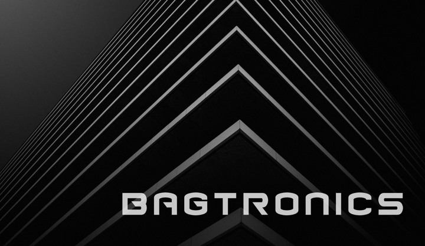

A combined TA1 and TA2 program: five sensing modalities read drug quality without opening the pack, and a secure, federally authorized AI platform turns those signals into a calibrated PASS, REVIEW or SUSPECT call at the port, warehouse or dispensing site. CoreMobile AI leads as administrative prime.
The platform this research lands on already runs securely on federal networks and already talks to field instruments. The platform risk is retired. The research risk sits where it belongs: in the models.
Four steps, one outcome: a bad lot is stopped before it reaches a patient. Each step has named organizations accountable for it.
CoreMobile AI’s TA2 pipeline, PCSIP-Q, keeps the model’s prediction and the final decision separate. A raw classifier probability never becomes an operational decision, and REVIEW is a designed route to human or reference-lab adjudication, not a failure state.
PCSIP already operates across all three directions. FASTPASS funds the research on top.
Beyond state-of-the-art R&D, not an integration exercise.
Learned separation of container, label, foil and blister contributions from drug signal, with physics-informed priors instead of per-package recalibration.
A shared latent representation across all five modalities, so models transfer between instruments, units and operators without retraining.
Open-set and anomaly methods that flag counterfeit, degraded, substituted and contaminated product outside the training distribution.
Calibrated confidence with explicit abstention, so operator review load and missed-detection risk are both bounded and auditable.
Each organization sits under a single technical area with one accountable role. CoreMobile AI is administrative prime for the award.
Common data layer, multimodal fusion, calibrated PASS / REVIEW / SUSPECT, secure and private AI, integration platform and audit trail. Owner of PCSIP-Q and the program’s simulation environment.
ISO 17025 method validation, authentic samples with destructive ground truth, wholesaler access, chain of custody, and Raman development across three commercial technologies.

TA1 and TA2 integrate from the start: modes, signal processing, AI decision making and engineering advance together, with a technical down-select at month 18.
Each mode trained on control samples to establish capability. Data harmonization, ML algorithms for centralized and edge AI, and multimodal simulators on existing PCSIP infrastructure.
Milestone: individual modes show proof of principle on key control samples.
The most complementary modes advance. Signal optimization between modes, enhanced secure multimodal AI, and Physical AI for integration and autonomous calibration.
Milestone: demonstrated improvement from at least two modes.
Detection optimized as an integrated system; PCSIP-Q gains autonomous sensor calibration for port and warehouse conditions; final prototype validated in the field.
Milestone: 3–5 multimodal case studies, at least one real-world case tied to ground truth.
A counterfeit or degraded medicine that reaches a patient is a failure nothing downstream can undo. Everything in this proposal exists to stop that one event.
For teaming, government stakeholder or program questions, contact CoreMobile AI, Inc.
Email CoreMobile AI